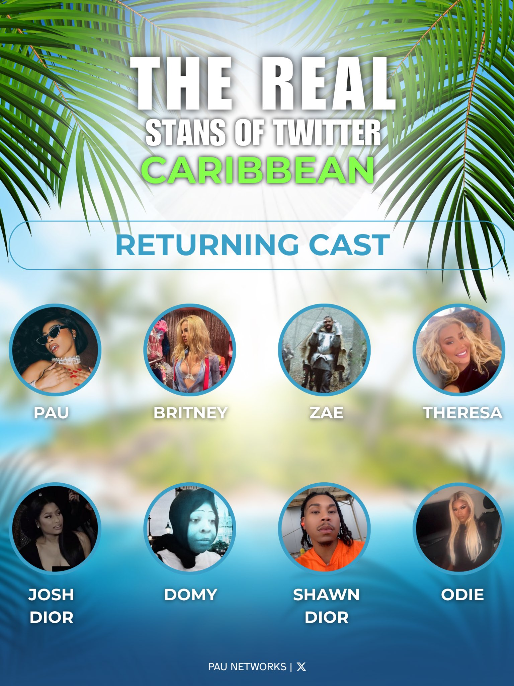
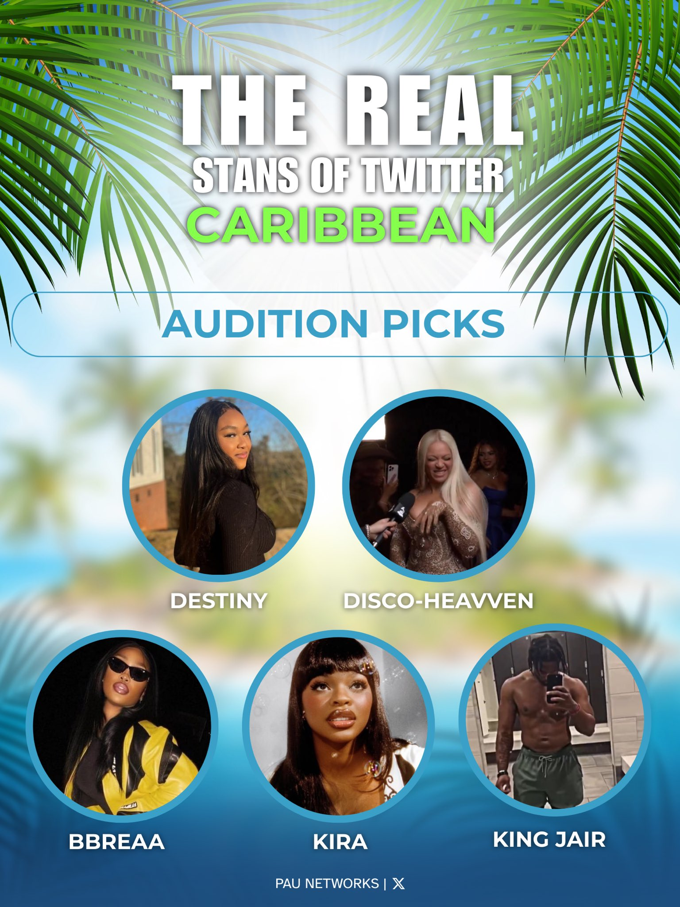

The Real Stans of Twitter


Meet the Cast
- aj - @SAUVETIIER
- King Jair - @KingRiChflex
- Pau The Don - @MwahItzPAU
- The Only Kiraa - @Onlykiraa1_
- Theresalgy - @iggyexpress
- raptingz1 - @raptingz1
- Hex Doll - @discoheaven
- kailani - @lanisinparis
- Domy - @Fallin4Domy
- Nick stunna - @nickibrown69
- Shawn Dior - @ShawnDi0r
- Britney The Don - @Britneyscure
- Odie - @odiedadon
- S - @zaestarr
- Josh Dior - @toseteree
- dtiny - @therealdtiny